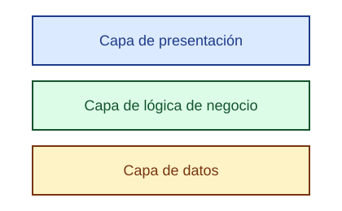

¿Qué es la arquitectura de software?
La arquitectura de software es la forma en que se organiza y estructura un sistema. Define sus componentes principales, la relación entre ellos y las reglas que permiten que el sistema funcione correctamente.
"La arquitectura es la organización fundamental de un sistema, representada en sus componentes, las relaciones entre ellos y con el entorno, y los principios que guían su diseño y evolución."
Ejemplo destacado: arquitectura en capas

Cada capa tiene una responsabilidad distinta y solo se comunica con la capa vecina. Puedes ver más detalles en la página de conceptos.
¿Para qué sirve?
- Organizar mejor un sistema.
- Facilitar el mantenimiento del software.
- Permitir que el sistema pueda crecer.
- Mejorar la comunicación entre componentes.
- Facilitar el trabajo de los desarrolladores.